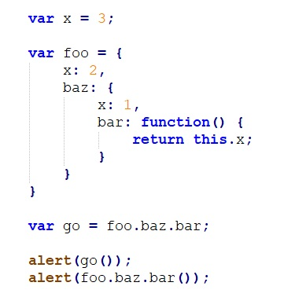

Answer:
The querySelector method in JavaScript allows you to select elements from
the DOM using CSS-style selectors. It returns the first element that
matches the selector. Here’s an example:
const element = document.querySelector(".my-class");
This example selects the first element with the class “my-class” and assigns it to the element variable.
Answer:
In JavaScript, event handling involves responding to user actions or
events triggered by the browser. Event listeners are functions that listen
for specific events and execute code in response. Here’s an example of
attaching an event listener to a button:
<button id="myButton">Click me</button>
const button = document.getElementById("myButton");
button.addEventListener("click", () => {
console.log("Button clicked!");
});
In this example, the event listener is attached to the button element with the id “myButton.” When the button is clicked, the anonymous arrow function is executed, and it logs “Button clicked!” to the console.
console.log("start");
setTimeout(()=>console.log('1'),0);
Promise.resolve().then(()=>console.log('2'));
setTimeout(()=>console.log('3'),0);
console.log("end");
// output
start
end
2
1
3
const obj = { a: 1, b: 2 };
const key = 'c';
const obj1 = obj;
obj1.d = 'hello';
console.log(obj);
console.log(obj[key]);
// output
{a:1,b:2,d:'hello'}
undefined
const obj = { a: 1, b: 2 };
const obj1 = obj;
obj1.d = 'hello';
console.log(obj); // { a: 1, b: 2, d: 'hello' }
console.log(obj[key]); // undefined
x = 7 + "8"; console.log(x); // output 78
var arr = [];
arr[0] = 1;
arr[1] = 2;
arr.foo = 3
console.log(arr.length);
// output
2
4+2+3+"1"
// output
91
function foo(){}
delete foo.length;
console.log(typeOf foo.length);
// output
Number

//output
3, 1
//output
3
What value is alerted?
// 4